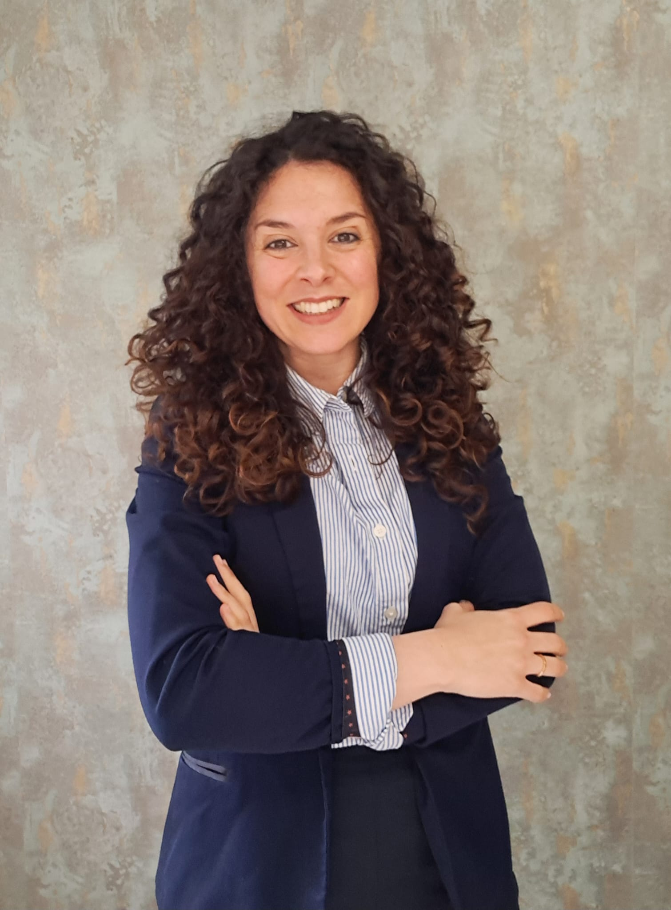

Eva Franco
Directora en EspaiMent
Desde el primer momento supe que la psicología sería más que una profesión para mí; era una vocación que exigía responsabilidad y constancia. Esa pasión me ha llevado a dedicarme con el corazón al aprendizaje activo, formándome, investigando, leyendo y buscando siempre nuevas formas de ayudar a las personas.
Mi objetivo es que te sientas acompañado y comprendido desde el primer día. Los procesos terapéuticos pueden ser desafiantes, pero recuerda: no tienes que recorrer este camino solo/a. Estoy aquí para caminar a tu lado.
Si buscas un espacio seguro para trabajar tu bienestar emocional, no dudes en dar el primer paso.
Formación
- Graduada en psicología con mención en intervención clínica en trastornos mentales y del comportamiento en la Universidad Nacional de Educación a Distancia.
- Máster en Psicología General Sanitaria por el Centro Universitario Superior Europeo.
- Máster en Trastornos Postraumáticos en la Universidad Nacional de Educación a Distancia.
- Nivel I y II de EMDR por la Asociación española de EMDR.
